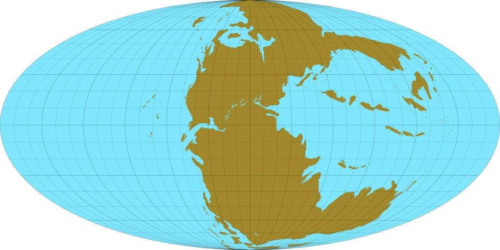

Кто такие динозавры?
Динозавры – это рептилии, принадлежащие к подклассу архозавров. Первые виды появились примерно 243-233 млн лет назад. Существа вели различный образ жизни в зависимости от особенностей строения тела и окружающей среды. Среди них были как хищники, так и травоядные. Некоторые виды вели наземный образ жизни, другие обитали под водой, а третьи и вовсе могли летать.
Интересный факт:инозавров относят к пресмыкающимся рептилиям, но в отличие от последних, их конечности располагались под телом, а не по бокам, как у тех же ящериц.
Динозавры обладали самыми разными размерами и внешним видом. По найденным костям ученые могут составить примерный образ существ и выявить их особенности.
Какая была продолжительность жизни динозавров
Поскольку динозавры жили миллионы лет назад, ученые могут лишь примерно предположить, какой была их продолжительность жизни. Для этого используется современное оборудование, а также проводятся различные анализы.
Считается, что динозавры, габариты которых варьировались от 1 до 5 метров, жили в среднем 30 лет. Более того, хищники старели быстрее из-за интенсивного образа жизни и ускоренного обмена веществ.
Крупные динозавры, высота которых доходила до нескольких десятков метров, чаще всего были травоядными. Их продолжительность жизни варьировалась от 200 до 300 лет. Их организм развивался медленно, и особи таких видов становились взрослыми лишь к 50 годам.
У некоторых видов продолжительность жизни была практически равна человеческой. Например, возраст стигимолоха доходил до 68 лет, а у коритозавра до 65.
Динозавры триасового периода
Континенты в триасовый период
Триасовый период длился с 251 по 201 млн лет назад. В его начале суша на Земле представляла единый континент – Пангею, но постепенно начала расходиться на отдельные материки.
Интересный факт: Пангея была третьим суперконтинентом. До него существовали Ваальбара и Кенорленд.
Климат на планете был преимущественно теплым. В холодных областях температура едва опускалась до нескольких градусов ниже нуля. А на экваторе она находилась в районе 50 градусов Цельсия.
Большинство территорий были тропиками с сухим климатом, где в больших количествах присутствовала растительность, преимущественно папоротники. Именно в таких условиях появились первые динозавры.
Герреразавр
Герреразавр
Герреразавр был хищником, перемещающимся на задних конечностях. В высоту он достигал 6 м, а масса находилась в диапазоне 600-650 кг. У динозавра был длинный хвост и вытянутая голова. Его кости найдены на северо-западе Аргентины. Изучив их, ученые пришли к выводу, что герреразавр обитал на Земле в период с 237 по 227 млн лет назад.
Тава
Тава
Вид динозавров проживал на территории современной Северной Америки примерно 215 млн лет назад, относится к отряду тероподов, причем считается одним из первых его представителей. Тава вел хищный образ жизни. Существо передвигалось на задних развитых лапах, передние конечности были длинными. Голова имела вытянутую форму, на челюстях размещались острые зубы.
Преондактиль
Преондактиль
Преондактили проживали на землях Италии примерно 215-210 млн лет назад. Существо умело летать, размах крыльев составлял примерно 45 см. По земле динозавр перемещался на длинных задних лапах. Также во время этого процесса он вполне мог опираться на края крыльев. Форма челюсти и зубов указывает на то, что преондактиль питался рыбой или крупными насекомыми.
Нотозавр
Нотозавр
Нотозавр – один из первых водных динозавров, который обладал четырьмя развитыми лапами, что позволяло ему перемещаться по твердой поверхности. Длина его тела доходила до 5 м, а масса варьировалась от 250 до 300 кг. Голова располагалась на вытянутой шее, а сзади имелся хвост примерно такой же длины. Вид проживал на территории России, Китая и Северной Африки. В водной среде он питался рыбой, а на суше охотился на небольших животных.
Эокурсор
Эокурсор
Эокурсор проживал на землях Южной Африки примерно 215 млн лет назад. Длина динозавра доходила до метра, а высота не превышала 30 см. Впервые кости экокурсора были обнаружены в 1993 году.
Интересный факт: зубы существа имеют треугольную форму, а строение челюсти указывает на то, что оно могло вести как хищный, так и травоядный образ жизни.
Плиозавр
Плиозавр
Плиозавр был водным хищником, перемещающимся с помощью длинных конечностей, по форме напоминающих ласты. Кости динозавра найдены на территории Англии в XIX веке. Питался плиозавр любыми существами, которые попадались на пути. Существует мнение, что он поедал даже себе подобных. В длину хищник вырастал до 15 м, а масса могла доходить до 25 т.
Панфагия
Панфагия
Панфагия обитал на территории современной Аргентины. Строение зубов указывает на то, что динозавр мог питаться как растительной, так и плотоядной пищей. В длину взрослые особи вырастали до 2 м. Панфагия передвигался на задних конечностях, при этом передние лапы были достаточно развиты. Голова держалась на шее средней длины. Динозавр жил в период с 237 по 227 млн лет назад.
Платеозавр

Платеозавр
Платеозавр вырастал до 12 м в длину, масса могла доходить до 4 т. Динозавр принадлежал к кладе ящеротазовых, проживал на пустынных территориях современной Европы. Платеозавр передвигался на четырех конечностях, но во время бега мог вставать на задние лапы. Передние имели ярко выраженные пальцы, которыми динозавр хватал еду и разные предметы.
Риохазавр
Риохазавр
В длину риохазавр вырастал до 10 м, проживал на территории Южной Америки. Тело динозавра было массивным, в высоту доходило до 2 м. Шея была значительно длиннее хвоста. Передвигался риохазавр на четырех толстых конечностях. Динозавр был медлительным, не мог быстро перемещаться, в пищу употреблял растительность.
Интересный факт: риохазавр обладал необычным строением верхней челюсти. На ней размещалось 5 передних зубов, а за ними был еще один ряд из 24.
Санхуанзавр
Санхуанзавр
Вид появился 237 млн лет назад, проживал на территории Аргентины, относится к семейству герреразаврид. Санхуанзавр имел короткую шею, на которой размещалась плоская голова с вытянутой челюстью. В длину тело взрослой особи достигало нескольких метров. Передние лапы хищника были короткие. Кости динозавра обнаружены в 1994 году.
Сатурналия
Сатурналия
Вид вырастал до метра в высоту и до 1,5 м в длину, питался растительной пищей. Сатурналия существовал примерно 237 млн лет назад, проживал на территории Бразилии. Также доказано, что динозавры конфликтовали с целофизом – хищником, который охотился на них. Найденные кости позволили установить, что сатурналия обладал длинными хвостом и шеей, конечности были тонкие.
Ставрикозавр
Ставрикозавр
Динозавр проживал на Земле примерно 225 млн лет назад. В длину взрослая особь вытягивалась до 2,5 м, а его высота составляла 80 см. При этом масса ставрикозавра редко превышала 35 кг. Считается, что благодаря хорошо развитым задним конечностям динозавр мог быстро бегать, что позволяло догонять добычу. Охотился ставрикозавр на небольших существ, в бою использовал острые зубы и когти на передних лапах.